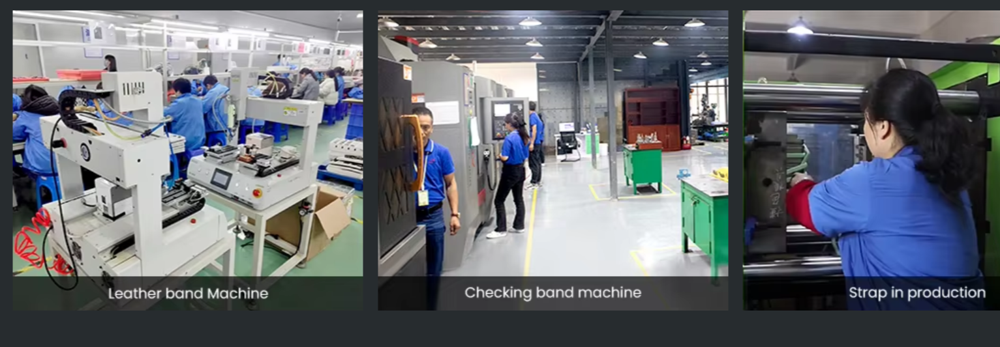
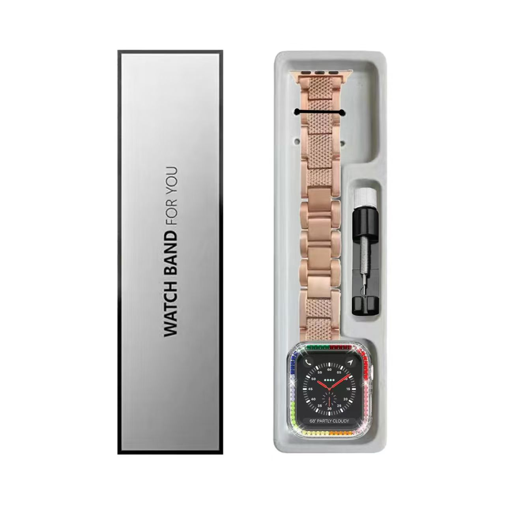
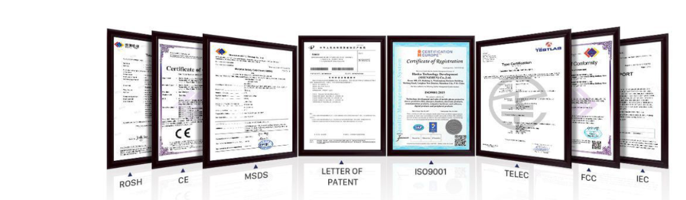
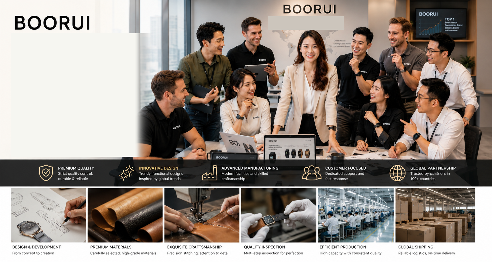

Material Story
Soft silicone, rubber and woven nylon options for sport and daily wear.
Silicone watch bands are suitable for high-volume retail, sport collections, waterproof positioning and promotional programs.

BOORUI combines retail-ready smartwatch band collections with export-oriented OEM/ODM, private label packaging and fast buyer communication.
Best for active buyers, waterproof positioning, gym assortments and outdoor watch users.
Soft silicone, rubber and woven nylon options for sport and daily wear.
Suitable for distributors, outdoor retailers and fitness accessory sellers.
Fast selection by size, compatibility and color direction.
Use these fields to prepare a faster quotation, sample review and private label discussion with BOORUI.
Silicone watch bands are suitable for high-volume retail, sport collections, waterproof positioning and promotional programs. Buyers can use this page to compare product fit, material direction, packaging possibilities and inquiry requirements before starting quotation. BOORUI focuses on practical B2B sourcing language, so every product direction is tied to real buyer needs such as compatibility, retail positioning, private label presentation, sample review and repeatable bulk order planning.
For brands, importers, distributors, Amazon sellers, Shopify stores and private label businesses, a clear sourcing path reduces back-and-forth. BOORUI can discuss custom logo, custom color, custom material, private label packaging, fast sample review and bulk production coordination based on the confirmed product scope. Documentation, compliance support and buyer proof should be reviewed with real order materials during inquiry, sample confirmation and pre-shipment review.
The recommended next step is to share target device models, material preference, estimated quantity, destination country, packaging needs and launch timeline. Joanne Wu can help prepare suitable product options, catalog references, quotation details and sample discussion for a more efficient OEM/ODM or wholesale sourcing process.
Designed for overseas buyers who need product clarity, fast communication and practical sourcing support.
Soft daily-wear and sport styles suit high-volume buyers, promotional orders and practical retail programs.
Water-resistant material direction supports gym, travel, outdoor and everyday wearable use cases.
Broad smartwatch compatibility helps buyers build one silicone range across multiple device families.
Color and packaging customization support makes silicone programs easier to adapt for private label buyers.
BOORUI uses careful proof language: certification documents, customer references and project details should be confirmed with real materials during inquiry and sampling.
Shenzhen Boxing Trading Development Co., Ltd. operates BOORUI for global B2B sourcing.
Material, color, buckle, model matching and custom project coordination.
Logo, packaging direction and buyer-facing assortment planning support.
Sample checks can cover fit, finish, material feel, hardware and packaging presentation.
Overseas buyers can review product fit, sample details, packaging direction and documentation needs before moving into quotation and order planning.
Alibaba StorefrontReal BOORUI materials are presented with careful B2B wording so buyers can review capability without unsupported certificate numbers or unverifiable customer claims.

Real production visuals help buyers review machine work, strap production and factory-direct sourcing confidence.

Clean packaging presentation supports higher perceived value for private label and wholesale product ranges.

Compliance-related documents can be reviewed on request according to product, market and order requirements.
Share target models, material direction, quantity and private label needs. Joanne Wu can help prepare product options, OEM/ODM quotation details, sample review and custom logo packaging discussion.

Concise answers help overseas buyers evaluate BOORUI and help AI search engines cite the page accurately.
Yes. BOORUI supports private label watch band programs for brands, Amazon sellers, Shopify stores, distributors and importers.
BOORUI supplies Apple Watch bands, Samsung Watch bands, Garmin bands, Huawei Watch bands, Mi Band straps, wearable accessories, phone cases, tablet cases, earbuds cases, USB-C hubs and 3C accessory collections.
Yes. BOORUI supports OEM/ODM coordination including material direction, color selection, logo, packaging and model matching.
MOQ depends on product type, stock status, material, color split and customization scope. Low MOQ support can be discussed for suitable ready stock and starter private label programs.
Yes. BOORUI can discuss custom logo, custom color, private label packaging, barcode placement and label direction after product and order requirements are confirmed.
Sampling time depends on material, customization scope and packaging needs. Joanne Wu can confirm timing after reviewing your target models, quantity and requirements.
BOORUI supports global B2B buyers with export-oriented communication, catalog sharing, quotation, sample discussion and delivery planning.
Common material directions include silicone, leather, nylon, stainless steel, titanium direction, TPU and PC for wearable and 3C accessory programs.
Contact BOORUI today for OEM/ODM smart watch bands, private label packaging and 3C accessories sourcing support.